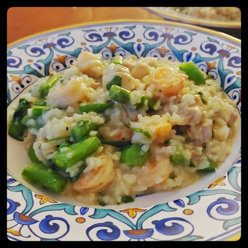

Timing is key for the texture and consistency to come together just right.

onion
olive oil
salt
arborio rice
salt
garlic
butter
white wine
chicken broth
chili flakes
fennel seeds
chicken
prawns
snap peas, green beans, and/or spinach
parmesan or asiagio cheese
optionally cilantro and/or parsely
This makes about enough for two people.
In a deep-walled frying pan, sautee a finely chopped onion in olive oil. Salt to help sweat the onions.
Bring a kettle of water to boil.
Soak a cup of arborio rice in water.
Add a few finely chopped cloves of garlic and a dollop of butter when the onions are translucent.
After the garlic softens for a minute, add a cup or more of white wine. Let that boil off the alcohol for a minute.
Rinse and strain the rice and add to the pan.
Add a cup of chicken broth and bring to a boil.
Add a cup of the boiled water and bring to a boil.
Optionally add chili flakes and fennel seeds.
In a separate frying pan, fry in olive oil a chicken breast or thighs cut into bite-size pieces, seasoning with salt and pepper.
When the chicken is just about done, add prawns and fry until the chicken and prawns start to crisp up.
Watch the consistency of the rice mixture, and keep adding small amounts of water to keep it from drying out. Keep checking if the rice is done after about 15 minutes.
With about 5 minutes left, add any or all of chopped snap peas, green beans, spinach.
When it's just about done, grate in a pile of parmesan or other hard cheese.